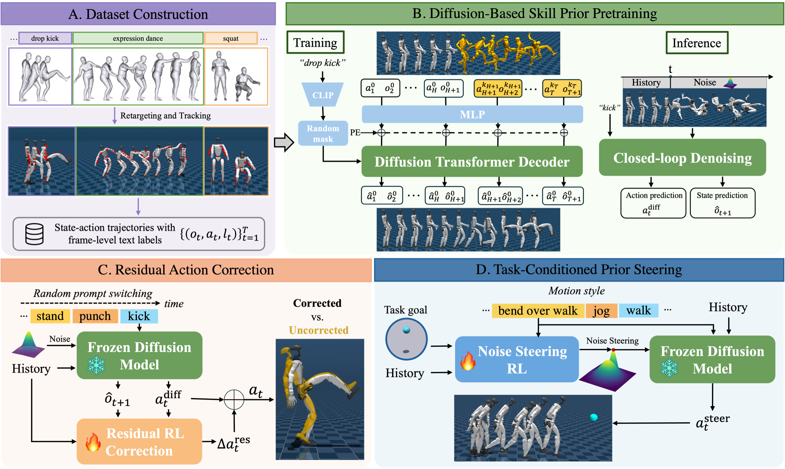

We present ADAPT, an end-to-end framework for interactive, text-conditioned humanoid whole-body control. Unlike dominant text-to-motion pipelines that generate kinematic motions for a separate tracker, ADAPT solves language control with an end-to-end closed-loop control framework, where the robot must continuously respond to changing commands while maintaining balance, natural motion, and smooth transitions. ADAPT learns a diffusion-based action prior from text-labeled humanoid state-action trajectories, enabling diverse motion skills to be directly executed from language commands. To improve long-horizon robustness and smooth prompt switching, we train a lightweight residual reinforcement learning policy on top of the frozen diffusion controller. We further show that the same diffusion policy can be reused as a steerable text-conditioned motion prior for downstream task adaptation. Experiments demonstrate robust language-grounded skill execution, smooth interactive transitions, and style-preserving downstream control.
Interactive language-conditioned humanoid control is a closed-loop dynamic control problem, not a motion generation problem. We therefore train a text-conditioned diffusion policy that maps proprioceptive history + text straight to joint-level actions, together with the future states those actions are expected to produce.
Because supervision comes from frame-level BABEL annotations rather than clip-level captions, the policy is trained on precise text-to-motion grounding and on the transition boundaries between behaviors — exactly the moments an interactive controller has to handle.
Kinematics–dynamics mismatch – Two-stage pipelines
generate a kinematic reference first and track it afterwards. Feasibility is never checked during
generation, so under rapid command switching the reference becomes dynamically infeasible —
especially in aerial phases and fast weight shifts.
Coarse temporal supervision – Existing end-to-end methods
train on sequence-level captions, where one description spans a whole clip. The policy never sees
rapid intra-sequence command changes, so it can sustain a behavior but not switch on the fly.
Distribution shift in behavior cloning – Offline BC alone
drifts out of the training support during long rollouts and at arbitrary switch times, causing falls.
Diffusion skill prior over state-actions – An 8-layer causal
transformer denoiser predicts joint future actions and proprioceptive states, conditioned on a frozen
CLIP text embedding. Per-frame independent noise levels (Diffusion Forcing) match the autoregressive
rollout at inference. Two DDIM steps with classifier-free guidance give ~2 ms inference,
enough for 50 Hz closed-loop deployment.
Constrained residual RL correction – A lightweight PPO residual
policy corrects the frozen prior's actions. Three constraints keep it from erasing the prior's semantics:
it acts on the lower body only, its scale is warmed up from zero, and a
self-tracking reward keeps the corrected state close to the diffusion-predicted next state.
Prompts are randomly switched every 5–10 s during training.
Noise steering for downstream tasks – The same frozen prior is
reused by learning a policy that outputs the diffusion input noise conditioned on the task goal.
Different noise samples realize the same text command differently, so steering biases motion toward the
objective while staying inside the learned skill prior.

Method overview. We pretrain a text-conditioned diffusion skill prior on retargeted humanoid motion data (A, B), then adapt it via two complementary mechanisms: residual RL corrects the prior's actions to improve robustness for interactive control (C), while noise steering RL guides the frozen prior toward task goals with controllable motion styles (D).
A single policy executes diverse locomotion, exercise, and upper-body skills from language, all deployed on a Unitree G1.
“walk forward”
“walk backwards”
“walk in circle”
“jog in place”
“jog in circle”
“sprint”
“step backwards”
“side step to the right”
“turn left”
“squat”
“raise arms”
“dance around”
“drop kick”
“drop kick”
“drop kick”
Text commands change on the fly, and ADAPT transitions between skills without losing balance.
Long-horizon rollout in simulation with continuous command switching
Long-horizon rollout in the real world with continuous command switching
More skill transitions results.
“sprint” → “kick left”
“jog in circle” → “squat”
“kick left” → “kick right”
“squat” → “jump rope”
“turn around” → “spin”
“raise left arm” → “wave left” → “wave both”
“dance around” → “walk backwards” → “sprint”
The same frozen diffusion prior is steered through its input noise to reach a target location while preserving the text-specified style — run, walk while bending over, or the unseen prompt jog.
“run” to goal (green tape)
“walk while bending over” to goal (green tape)
@article{wu2026adapt,
title={ADAPT: Agile Diffusion Action Priors for Robust and Steerable Online Text-Driven Humanoid Control},
author={Wu, Yan and Li, Chenhao and Zhao, Kaifeng and Li, Gen and Hutter, Marco and Tang, Siyu},
journal={arXiv preprint arXiv:XXXX.XXXXX},
year={2026}
}If you find this work useful, you may also be interested in our related work UniPhys and NaP-Control:
@inproceedings{wu2025uniphys,
title={UniPhys: Unified Planner and Controller with Diffusion for Flexible Physics-Based Character Control},
author={Wu, Yan and Karunratanakul, Korrawe and Luo, Zhengyi and Tang, Siyu},
booktitle={Proceedings of the IEEE/CVF International Conference on Computer Vision (ICCV)},
year={2025}
}
@inproceedings{chen2026napcontrol,
title={NaP-Control: Navigating Diffusion Prior for Versatile and Fast Character Control},
author={Chen, Chia-Wen and Wu, Yan and Karunratanakul, Korrawe and Tang, Siyu},
booktitle={Proceedings of the European Conference on Computer Vision (ECCV)},
year={2026}
}